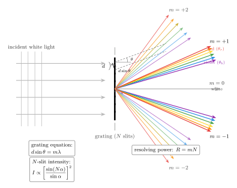

CD 和 DVD 上的彩虹从哪来?
随手把一张 CD 翻到背面, 冲着窗外的太阳稍微一歪, 镀银的盘面就亮起一条条红-橙-黄-绿-蓝-紫的带子, 像一道被揉皱的小彩虹. 我们上一节用楔形空气膜已经看过肥皂泡和油膜的彩色, 那是两束反射光相加的结果 — 条纹的 "密度" 受限于两个界面间的厚度变化, 很难做得特别鲜艳. 可 CD 上的彩虹却比棱镜分光还浓还亮, 角度上大开大合. 这里一定发生了新的事情.
把 CD 放大看, 它的数据层并不是连续的金属面, 而是沿着一条极长的螺旋轨道排列的凹坑 (pit) 与平台 (land). 沿径向切一刀, 相邻轨道间的距离大约 $d \approx 1.6\,\mu\text{m}$; 到了 DVD, 这个周期缩到 $d \approx 0.74\,\mu\text{m}$; 蓝光 Blu-ray 更是压到 0.32 μm. 光打在这样周期性的刻痕上, 不再只是两束光相加, 而是成千上万束次波 (secondary wave) 同时叠加 — 这就是本节要说的 多缝干涉, 或者说 衍射光栅.
一、从双缝到 N 缝: 次波相加
回到最基本的 Huygens-Fresnel 图景. 一束单色平面波 $\lambda$ 垂直打在一行 $N$ 个等间距、宽度相同的小缝上, 缝心间距 $d$, 缝宽 $a$. 每一道缝都可看成一个新的次波源; 要问衍射方向 $\theta$ 上的振幅, 就得把这 $N$ 个次波的复振幅加起来.
相邻两缝发出的次波走到远场的路径差为 $d\sin\theta$, 对应相位差
$$ \varphi = \frac{2\pi}{\lambda}\, d\sin\theta \equiv 2\alpha,\qquad \alpha \equiv \frac{\pi d \sin\theta}{\lambda}. $$
如果忽略每条缝自身的宽度 (即取 $a \to 0$), 第 $n$ 缝相对第 0 缝的相位是 $n\cdot 2\alpha$, $N$ 个等距相位的几何级数求和给出
$$ A_N(\theta) = A_0 \sum_{n=0}^{N-1} e^{i\, 2n\alpha} = A_0\, \frac{\sin(N\alpha)}{\sin\alpha}\, e^{i(N-1)\alpha}. $$
取模方再补上每条缝自身宽度 $a$ 造成的单缝衍射因子 $\mathrm{sinc}^2(\beta)$, 完整的多缝强度公式就是我们这一节的主角:
$$ I(\theta) \;=\; I_0\,\left[\frac{\sin(N\alpha)}{\sin\alpha}\right]^2\,\mathrm{sinc}^2\!\beta,\qquad \beta \equiv \frac{\pi a \sin\theta}{\lambda}. \tag{1}$$
第一个因子 $[\sin(N\alpha)/\sin\alpha]^2$ 叫 阵列因子, 是 $N$ 条缝协同的结果; 第二个因子 $\mathrm{sinc}^2\beta$ 叫 衍射包络, 是每条单缝自己的贡献. 两者相乘, 光栅才完整.
现在看阵列因子的关键性质. 当 $\alpha = m\pi$ ($m=0, \pm 1, \pm 2, \ldots$) 时, 分子分母同时为零, 用极限 $\sin(N\alpha)/\sin\alpha \to N$, 于是
$$ I_{\text{主极大}} \;=\; N^2 I_0\,\mathrm{sinc}^2\beta. $$
强度与 $N^2$ 成正比 — 不是 $N$, 而是 $N^2$! 这是因为 $N$ 条缝在主极大方向上振幅同相相加, 是 $N A_0$, 所以强度是 $N^2 |A_0|^2$. 对双缝 ($N=2$) 峰值只比单缝大 4 倍; 但当 $N$ 达到上万, 峰值会亮得像刀刃. 更重要的是, 主极大附近阵列因子从 $N$ 掉到 $0$ 只需要 $\Delta\alpha \approx \pi/N$, 于是主极大的角宽度
$$ \Delta\theta \;\approx\; \frac{\lambda}{N d \cos\theta} $$
随 $N$ 反比变窄. 缝越多, 主极大越尖锐, 这是光栅比双缝干涉高明的地方.

二、光栅方程: $d\sin\theta = m\lambda$
把主极大条件 $\alpha = m\pi$ 代入 $\alpha = \pi d\sin\theta/\lambda$, 直接得到光栅方程
$$ d\sin\theta \;=\; m\lambda,\qquad m = 0, \pm 1, \pm 2, \ldots \tag{2}$$
这是本节最朴素、最好用的一条公式. 它的意思是: 给定光栅周期 $d$, 每一个波长 $\lambda$ 都在一族离散角度 $\theta_m$ 上有主极大; 不同的 $m$ 叫不同的 衍射级 (order), $m=0$ 是 "不偏", $m=\pm 1$ 是一级, $m=\pm 2$ 是二级, 依此类推.
为什么白光会被分开? 因为式 (2) 里的 $\theta_m$ 依赖 $\lambda$. $m=0$ 那一级所有波长都在同一方向, 还是白光; 但 $m \neq 0$ 的所有级上, 红光 $\lambda$ 大 $\Rightarrow \sin\theta$ 大; 紫光 $\lambda$ 小 $\Rightarrow \sin\theta$ 小. 所以每一侧都拉出一条红在外、紫在内的彩带 — 这就是 CD 背面的那道彩虹, 以及棱镜做不到的高亮度分光.
顺便看一下: 对光栅来说, 只有 $|\sin\theta| \le 1$ 才对应真实的出射角, 所以
$$ |m| \;\le\; \frac{d}{\lambda} $$
这限制了最多能看到多少级主极大. CD 的 $d/\lambda \approx 1.6/0.55 \approx 2.9$, 所以最多看到 $m = \pm 2$; DVD 只能看到 $m=\pm 1$. Blu-ray 就更少. 这也是第三节要用到的极限.
三、CD 与 DVD: 把数字代进去
现在干脆就拿一张 CD 和一张 DVD 按式 (2) 算一算, 看彩虹开得有多宽.
CD, $d = 1.6\,\mu\text{m}$, 一级 ($m=1$).
取可见光红端 $\lambda_r = 650$ nm, 蓝端 $\lambda_b = 450$ nm:
$$ \sin\theta_r \;=\; \frac{650\times 10^{-9}}{1.6\times 10^{-6}} \;=\; 0.406,\qquad \theta_r \;\approx\; 24.0^\circ. $$
$$ \sin\theta_b \;=\; \frac{450\times 10^{-9}}{1.6\times 10^{-6}} \;=\; 0.281,\qquad \theta_b \;\approx\; 16.3^\circ. $$
一级彩虹的张角大约
$$ \Delta\theta_{CD} \;=\; \theta_r - \theta_b \;\approx\; 7.7^\circ. $$
八度左右 — 人眼在半米外就能轻松分辨清楚. 这正是 CD 背面那条不需要任何光学器件就能看到的彩带.
DVD, $d = 0.74\,\mu\text{m}$, 一级 ($m=1$).
$$ \sin\theta_r \;=\; \frac{650}{740} \;=\; 0.878,\qquad \theta_r \;\approx\; 61.4^\circ. $$
$$ \sin\theta_b \;=\; \frac{450}{740} \;=\; 0.608,\qquad \theta_b \;\approx\; 37.4^\circ. $$
这一次张角
$$ \Delta\theta_{DVD} \;\approx\; 24^\circ, $$
是 CD 的三倍多. 理由很干脆: $d$ 减小意味着 $\sin\theta = \lambda/d$ 全员放大, 同一波长差 $\Delta\lambda$ 拉出的 $\Delta\theta$ 也更大 — 这在光栅语言里叫 角色散, 对式 (2) 两边求微分, 得
$$ \frac{d\theta}{d\lambda} \;=\; \frac{m}{d\cos\theta}. $$
$d$ 越小, 色散越大; 级数 $m$ 越高, 色散也越大. 这正是现代光栅越刻越密、光谱仪越用越高阶的原因.
四、分辨本领、极限与历史
看到了 "把颜色铺开多宽", 下一步自然要问 "能把挨得多近的两根谱线分开". 这件事由阵列因子的 尖锐程度 决定. 主极大角宽 $\Delta\theta \approx \lambda/(Nd\cos\theta)$, 而两种相近波长 $\lambda, \lambda + \delta\lambda$ 的主极大错开 $\delta\theta = m\,\delta\lambda/(d\cos\theta)$. Rayleigh 判据要求后者不小于前者, 就得到光栅的分辨本领
$$ R \;\equiv\; \frac{\lambda}{\delta\lambda_{\min}} \;=\; mN. $$
公式漂亮得让人想再读一遍: 分辨能力只取决于 阶数 $\times$ 缝的总数, 和 $d$ 本身无关. 这是因为 $d$ 同时改变色散和主极大宽度, 两者正好抵消.
真实光谱仪估算. 一块典型的天文光栅做得很大, 比如刻纹密度 1000 line/mm, 宽度 10 cm. 那么 $N = 10^5$ 条缝, 周期 $d = 1\,\mu\text{m}$. 用到二级 $m = 2$, 得
$$ R \;=\; 2 \times 10^5 \;=\; 2\times 10^5. $$
换算: 对 $\lambda = 500$ nm 的绿光, 能分辨的最小波长差
$$ \delta\lambda_{\min} \;=\; \frac{500\,\text{nm}}{2\times 10^5} \;=\; 2.5\times 10^{-3}\,\text{nm} \;=\; 0.0025\,\text{nm}. $$
这已经可以看到钠 D 双线 ($\Delta\lambda \approx 0.6$ nm) 的一千分之一精度, 不在话下. 把刻纹数目再增加到 $N = 10^5\cdot 10$ 甚至用级联的 echelle + 交叉色散, 就能达到 $R \sim 10^6$, 看清恒星光谱里的 Zeeman 分裂、谱线轮廓与径向速度 — 这已经是现代天体物理 "看见" 系外行星的入口.
极限检验: $\lambda \gt d$ 会怎样? 光栅方程 $d\sin\theta = m\lambda$ 说, 若 $\lambda \gt d$, 就连 $m = \pm 1$ 也需要 $|\sin\theta| \gt 1$ — 无解. 光栅此时 只剩零级, 不再分光. 把这一极限应用到 X 射线 ($\lambda \sim 0.1$ nm), 哪怕 DVD 的 $d = 740$ nm 也远大于它, 倒是能衍射, 但角度小到需要特制仪器才能测; 反过来, 微米级的 X 射线是不存在的, 但如果真拿 0.1 mm 刻度的宏观光栅去照 X 光, 就会得到 $\lambda/d$ 太小、角色散几乎为零的 "零分光" 极限. 所以我们才需要晶体作天然的 Å 级光栅 — 这就是下一章 Compton 实验背后的 Bragg 衍射要做的事.
历史的一眼. 光栅方程最早是 Fraunhofer 1821 年在慕尼黑的实验室里系统得到的. 他先用纤细的金属丝在两根螺杆中间绷成一排等间距的 "缝" — 一英寸里塞进 300 根丝, 对应 $d \approx 85\,\mu\text{m}$; 随后发明了金刚石刻划机, 把玻璃面划出上万条平行槽, 才真正做出可用的透射光栅. 他用这台土制光谱仪一口气测出太阳光谱里几百条暗线 (今天叫 夫琅禾费线), 并由 $\sin\theta = m\lambda/d$ 反推出那些暗线的波长到 $10^{-4}$ 精度 — 这是人类第一次用纯几何和数数, 精确测得光波的波长. 六十年后, Henry Rowland 在约翰·霍普金斯大学把刻线机做到能在凹面金属镜上刻出每英寸 20000 条槽 (即 $d \approx 1.27\,\mu\text{m}$), 顺手把聚焦与色散合二为一, 发明了 "Rowland 凹面光栅", 让后来的原子光谱学 (Rydberg、Bohr、量子力学) 有了可用的数据土壤. 今天装在 VLT、Keck、以及 JWST 上的 echelle 光栅, 刻线精度用纳米量级的干涉仪监控, 但方程依然是 Fraunhofer 那一行 $d\sin\theta = m\lambda$.
小结
这一节里, 我们把 Huygens 次波相加从两缝扩展到 $N$ 缝, 看到了两件互相支撑的事情: 阵列因子让主极大的强度随 $N^2$ 增加、角宽度随 $1/N$ 变窄, 于是光栅既亮又尖; 主极大的位置由光栅方程 $d\sin\theta = m\lambda$ 决定, 不同波长被推到不同角度, 白光被 "梳开" 成彩虹. 代入 CD 的 1.6 μm 和 DVD 的 0.74 μm, 我们算出了日常可见的 8° 与 24° 彩带; 代入 1000 line/mm 的实验室光栅, 我们算出了 $R \sim 10^5$ 的分辨本领, 足以把恒星光谱里细得像发丝的吸收线一根根分开. 对 "光是什么" 这个大问题, 光栅给的答案依旧是波动论的: 光是一种在周期结构上能自我干涉的场; 只要结构的周期和它的波长可比, 光就会把自己的颜色写在角度上, 让我们直接读出来. 下一节, 我们要把 $\lambda \ll d$ 的极限反过来推到极端 — 用 Å 级的原子点阵去衍射 X 光, 顺带问一个更危险的问题: 当光被电子散射时, 它的波长也会变, 这究竟是波, 还是粒子?
▲